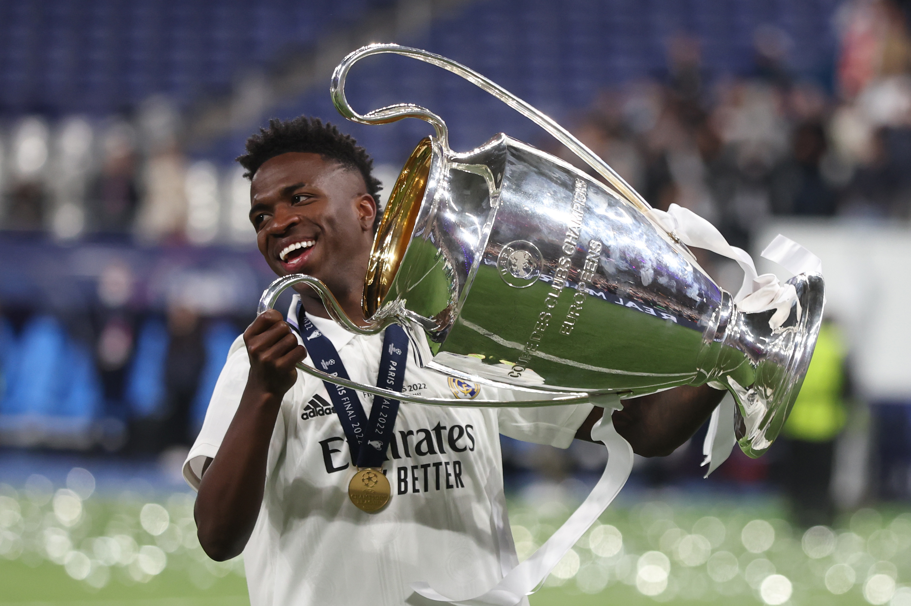

Kylian Mbappé



Vinícius Júnior es un futbolista brasileño reconocido por su increíble velocidad, agilidad y talento para desequilibrar en el uno contra uno. Desde muy joven mostró cualidades excepcionales que lo llevaron a convertirse en una de las mayores promesas del fútbol sudamericano.
Tras su llegada al Real Madrid, Vinícius pasó por un proceso de adaptación en el que fue desarrollando madurez, visión de juego y mejorando su definición. Con trabajo constante y disciplina, logró evolucionar hasta ser uno de los jugadores más determinantes de la plantilla.
Su estilo ofensivo se caracteriza por su cambio de ritmo, su habilidad para superar rivales y su capacidad de generar peligro en cualquier jugada. Además, en los últimos años ha incrementado su aporte goleador, convirtiéndose en una amenaza directa para los defensas rivales.
Vinícius también destaca por su actitud en el campo: es un jugador explosivo, competitivo y con una energía contagiosa que impulsa a su equipo. Su química con otros jugadores ofensivos ha fortalecido el ataque del Real Madrid, haciéndolo más impredecible.
| Dato | Información |
|---|---|
| Fecha de nacimiento | 12 de julio de 2000 |
| Club actual | Real Madrid |
| Posición | Extremo izquierdo |
| Número | 7 |
| Curiosidad | Anotó el gol del título en la final de la Champions 2022. |
| Más información | Mas información de Vini jr |
| @vinijr |